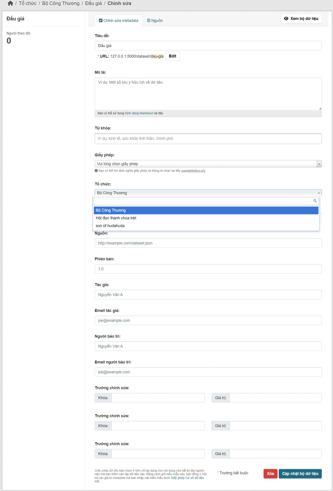

Hướng dẫn sysadmin¶
Hướng dẫn này bao gồm các tính quản trị: quản lý người dùng và bộ dữ liệu. Người dùng sysadmin có thể truy cập và chỉnh sửa bất kỳ tổ chức nào, xem và thay đổi chi tiết người dùng và xóa vĩnh viễn bộ dữ liệu.
Tùy chỉnh giao diện¶
Một số tùy chỉnh đơn giản để tùy chỉnh giao diện của trang web của bạn có
sẵn thông qua giao diện người dùng, tại https://odp.cantho.gov.vn/ckan-admin/config/.
Tại đây bạn có thể chỉnh sửa như sau:
- Tiêu đề trang
- Tiêu đề này được sử dụng trong HTML <title> của trang web. Ví dụ: Nếu tiêu đề trang web của bạn là 'Dữ liệu mở', trang chủ sẽ hiển thị 'Chào đón - Dữ liệu mở'.
- Kiểu trang trí
- Chọn một trong năm bảng màu cho chủ đề mặc định.
- Đặt thẻ đánh dấu dòng
- Điều này không được sử dụng trong các chủ đề mặc định hiện tại của web, nhưng có thể được sử dụng trong tương lai.
- Logo trang web
- Một URL cho logo trang web, được sử dụng ở đầu mỗi trang của web.
- Thông tin
- Văn bản xuất hiện trên trang "Thông tin",
https://odp.cantho.gov.vn/about. Bạn có thể sử dụng Markdown tại đây. Nếu nó bị bỏ trống, một văn bản tiêu chuẩn mô tả web sẽ xuất hiện.
- Đoạn văn bản giới thiệu
- Văn bản này xuất hiện trên trang chủ của trang web của bạn.
Quản lý tổ chức và bộ dữ liệu¶
Sysadmin có toàn quyền truy cập vào tài khoản người dùng, tổ chức và bộ dữ liệu. Ví dụ: bạn có quyền truy cập vào mọi tổ chức như thể bạn là thành viên của tổ chức đó.
Ví dụ: để thêm hoặc xóa người dùng vào một tổ chức, thay đổi vai trò của người dùng trong tổ chức, xóa tổ chức hoặc chỉnh sửa mô tả của tổ chức đó, v.v., hãy truy cập trang chủ của tổ chức.Bạn sẽ thấy nút "Quản lý" trên web như thể bạn là thành viên của tổ chức. Bạn có thể sử dụng điều này để thực hiện tất cả các chức năng quản trị tổ chức.
Tương tự, để chỉnh sửa, cập nhật hoặc xóa tập dữ liệu, hãy truy cập trang tập dữ liệu và sử dụng nút 'Hiệu chỉnh'. Là người dùng quản trị, bạn có thể thấy tất cả các bộ dữ liệu bao gồm cả những bộ trong chế độ riêng tư cho một tổ chức.
Di chuyển một bộ dữ liệu giữa các tổ chức¶
Để di chuyển tập dữ liệu giữa các tổ chức, hãy truy cập trang dữ liệu hiệu chỉnh. Chọn mục thích hợp từ danh sách thả xuống của 'Tổ chức', và nhấn vào 'Cập nhật bộ dữ liệu'.
Xóa vĩnh viễn bộ dữ liệu¶
Một bộ dữ liệu đã bị xóa không bị xóa vĩnh viễn khỏi web; nó chỉ đơn giản được đánh dấu là 'đã xóa' và sẽ không còn hiển thị trong tìm kiếm, v.v. Không thể sử dụng lại bộ dữ liệu URL cho bộ dữ liệu mới.
Để xóa vĩnh viễn một bộ dữ liệu:
- Điều hướng đến tập dữ liệu 'Hiệu chỉnh' và 'Xóa' tập dữ liệu.
- Truy cập
https://odp.cantho.gov.vn/ckan-admin/trash/.
Trang này hiển thị tất cả các bộ dữ liệu đã xóa và cho phép bạn xóa chúng vĩnh viễn.
Cảnh báo
Hành động này không thể khôi phục.
Quản lý người dùng¶
Để tìm hồ sơ người dùng, đi đến https://odp.cantho.gov.vn/user/. Bạn có thể tìm kiếm người dùng trong hộp
tìm kiếm được cung cấp. Bạn có thể tìm kiếm theo bất kỳ phần nào trong hồ sơ người dùng, bao gồm cả
địa chỉ email của người dùng.
Để chỉnh sửa thông tin người dùng:
- Chọn tên người dùng muốn chỉnh sửa.
- Trên hồ sơ người dùng, bạn chọn nút "Quản lý".
- Hiển thị trang cài đặt người dùng. Quản trị viên có thể xóa người dùng hoặc thay đổi bất kỳ cài đặt nào, bao gồm họ và tên, thư điện tử, thông tin và mật khẩu.
Ghi chú
Quản trị viên không thể thay đổi tên tài khoản.